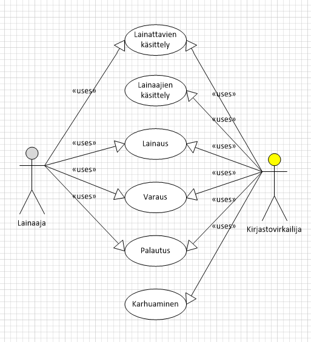
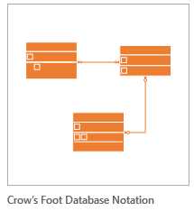
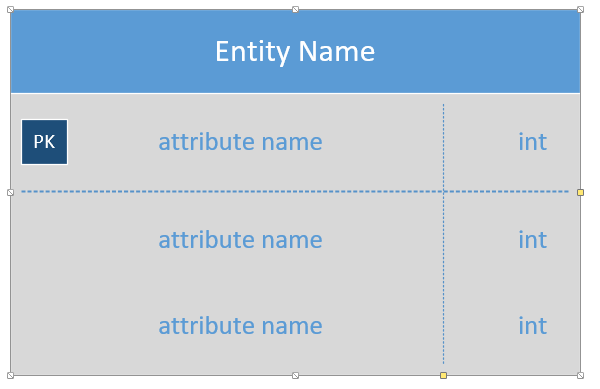

Kirjaston tietokannan suunnittelu ja toteutus ja testaus
Lähtökohta
Oy Pulju Ab:llä on työntekijöiden käyttöön tarkoitettu kirjasto, jossa on lainattavana kirjoja, lehtiä, CD- ja DVD-levyjä. Kirjasto toimii osittain itsepalveluperiaatteella ja lisäksi sinne on palkattu yksi kirjastovirkailija.
Tehtävänäsi on suunnitella, toteuttaa ja testata MySQL-tietokanta rakenteilla olevaan ohjelmistoon, jonka avulla pitäisi näppärästi hoitua kaikki kirjaston tietojenkäsittelyyn liittyvät toiminnot.
Seuraavassa hiukan tarkempi selvitys järjestelmästä.
Työstä palautetaan yksi kokoava Word-asiakirja.
Toiminnot pääpiirteittäin
- lainattavien käsittely
- lisäys
- muutos
- poisto
- kysely
- onko tietty kappale lainattavissa
- raportit lainattavista (hakuehdoin)
- lainaajien käsittely
- lisäys
- muutos
- poisto (työntekijä poistuu Oy Pulju Ab:n palveluksesta)
- kysely
- tietyn lainaajan yhteystiedot
- varausten käsittely
- varaaminen
- varaustilanteen tarkastelu (onko kappaleesta paljon varauksia, milloin eräpvm)
- lainaus
- palautus
- karhuaminen eli muistutus (sakkoja ei peritä)

Tietokannan suunnittelu
Lue ennen tämän tekemistä alla olevat kyselytehtävätkin; niistä saat vinkkejä tietokannan kenttien suunnitteluun. Tehtävän suunnitteluosuudesta palautetaan:
- ER-kaavio: käytä Visio 2013:n Chen's Database Notation-kaaviota
- Tietokannan rakenteen kuvaus: käytä Visio 2013: Crow's Foot Database -kaaviota. Pystyt määrittämään kentät (Show attributes).


Tässä vaiheessa tarkistetaan tietokantasuunnitelmat; ensin tekijä tarkistaa, sitten kaveri tarkistaa ja lopuksi Eerikki. (laadi muistio kahdesta jälkimmäisestä tarkistuksesta, katso esimerkki)
Tietokanta toteutetaan MySQL:llä. Liitä Create table -lausekkeet dokumenttiin.
Tietokannan testausta varten tehdään tapausluettelo ja tietokanta testataan sen mukaan.
Kyselyiden teko tietokantaan
Tästä osioista palautetaan SQL-kysely ja (jos haluat niin vastaus). Eli muista koota Word-tiedostoa. Palautuksena vain yksi kokoava Word-asiakirja.
- Tee kysely, jonka avulla saat selville, millaisia lainauksia (myös lainassa olevan tuotteen perustiedot esim. kirjan nimi pitäisi tulla näkyviin) tietyn nimisellä lainaajalla on tällä hetkellä.
- Tee kysely, jonka avulla saat selville tällä hetkellä myöhässä olevat lainaukset karhuamista varten (myös lainaajan nimi ja sähköpostiosoite pitää tulla näkyviin). Vastaukseen pitää tulla kaikki kentät, jotka kirjastovirkailija tarvitsee kirjoittaakseen karhun lainaajan sähköpostiin.
- Ketkä kaikki lainaajat ovat jossakin vaiheessa lainanneet Aleksis Kiven Seitsemän veljestä?
- Tee kysely, jonka avulla saat selville, kuinka paljon lainauksia kullakin lainaajalla on tietokannassa tällä hetkellä.
- Tee kysely, jonka avulla saat selville, mitä tuotteita ei ole lainattu koskaan.
- Tee kysely, jonka avulla saat informatiivisen listan kuluvan vuoden lainauksista.
- Tee kysely, joka tuottaa listan kaikista lainattavista tuotteista tuotetyypeittäin eli erikseen kirjat, lehdet dvd:t jne.
Palautus viimeistään perjantaina xx.xx. sähköpostilla, jonka liitteenä on yksi Word-dokumentti, johon on koottu kaikki em. asiat sekä tietysti tieto, miten pääsen testaamaan kantaasi.